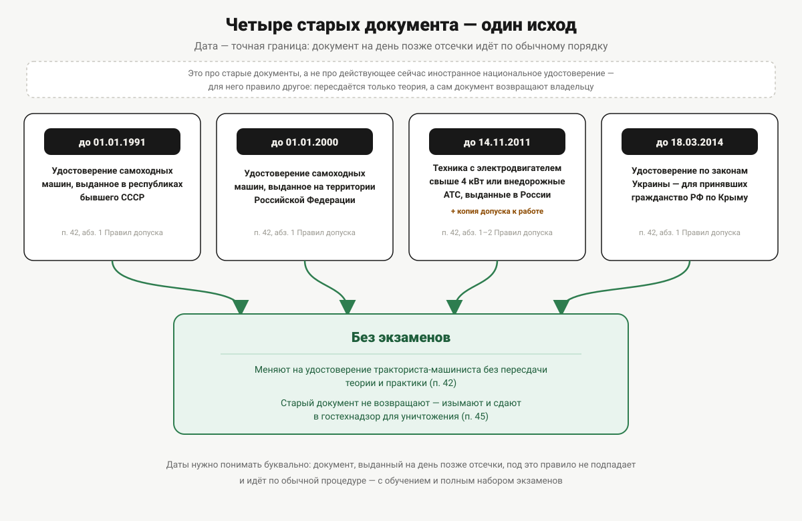

Обмен иностранного удостоверения тракториста
Удостоверение другой страны, документ из республик бывшего СССР и российское удостоверение старого образца меняют на удостоверение тракториста-машиниста. Даты-отсечки, перевод и экзамены при обмене.
Среди бумаг после переезда находится удостоверение тракториста, выданное не в России, — или в старых семейных документах обнаруживается потрёпанная книжечка тракториста-машиниста советского образца, датированная восьмидесятыми. В обоих случаях первый вопрос один: придётся ли учиться заново. Ответ зависит не от возраста документа как такового, а от того, где и когда он выдан, — и разница между двумя сценариями больше, чем кажется.
Главное разграничение
Правила допуска к управлению самоходными машинами и выдачи удостоверений тракториста-машиниста (тракториста), утверждённые постановлением Правительства РФ от 12.07.1999 № 796 (далее — Правила допуска), делят все документы не по стране происхождения как таковой, а по двум разным основаниям, и это разграничение — ключ ко всей статье:
- национальные удостоверения — документы, выданные в других государствах (гражданам России, иностранным гражданам или лицам без гражданства), которые норма меняет на российское удостоверение только после сдачи теоретических экзаменов;
- старые документы — удостоверения, выданные в самой России (или на территории бывшего СССР) до определённых дат-отсечек, которые норма меняет вообще без каких-либо экзаменов.
То есть действующее сегодня удостоверение соседней страны и советское удостоверение 1988 года — это два формально разных случая с разными последствиями, а не один общий «старый документ». Дальше — по каждому из них.
Национальные удостоверения: что за этим стоит
Пункт 39 Правил допуска называет национальными удостоверениями документы «на право управления самоходными машинами, выданные гражданам Российской Федерации, иностранным гражданам и лицам без гражданства в других государствах». Тут же — условие их применимости в России: «Национальные удостоверения действительны на территории Российской Федерации в случаях, предусмотренных международными договорами Российской Федерации» (абзац второй пункта 39). Конкретный перечень таких договоров по доступным источникам не установлен — этот вопрос стоит уточнять напрямую в органе гостехнадзора, а не полагаться на общие утверждения о том, что права «такой-то страны действуют в России».
Обмен национального удостоверения: только теория
Замена национального удостоверения на российское проходит в порядке пунктов 31, 32 и 34 Правил допуска — после сдачи теоретических экзаменов в порядке пунктов 15–18, 22, 27 и 29. Слово «теоретических» здесь ключевое: практический этап (манёвры на площадке и на маршруте) норма при обмене не требует вовсе. Владельцу иностранного удостоверения не нужно заново демонстрировать навык вождения — только пройти оба блока теории (по эксплуатации машин и по правилам дорожного движения) и получить проходной балл.
Что не требуется при обмене
Отдельно стоит подчеркнуть то, чего в процедуре обмена нет. Условие о профессиональном обучении в организации со свидетельством о соответствии (подпункт «в» пункта 11) в перечне норм, регулирующих обмен (пункты 31, 32, 34), не упоминается — повторное прохождение курсов для обмена действующего иностранного удостоверения норма не требует. Это отдельная история от ситуации, когда документа вообще не было и его пытаются получить в обход обучения, — она разобрана в статье «Удостоверение тракториста в обход обучения».
Освобождение от теории по ПДД — не для иностранных прав
Отдельная льгота касается не тракторного, а водительского документа — и путать их не стоит. Пункт 29¹ Правил допуска освобождает от проверки знания ПДД тех, кто имеет российское национальное водительское удостоверение. Формулировка узкая: льгота привязана именно к российскому водительскому удостоверению. Владельцу иностранных водительских прав это освобождение не положено — блок про ПДД при обмене тракторного удостоверения он сдаёт на общих основаниях, наравне с тем, у кого вообще нет водительского документа.
Перевод: когда нужен и как заверяется
Если национальное удостоверение заполнено на иностранном языке, для замены его нужно перевести на русский. Пункт 41 Правил допуска (в редакции постановления Правительства РФ от 21.05.2022 № 932) требует, чтобы верность перевода либо подлинность подписи переводчика были нотариально засвидетельствованы в порядке, установленном законодательством о нотариате, — обычного перевода без нотариального заверения норма не принимает.
Судьба сданного документа
Здесь у национальных удостоверений — важное отличие от судьбы российского документа при обычной замене (её шесть поводов и то, что при этом происходит со старым удостоверением, разобраны в статье «Замена и восстановление удостоверения в Перми»). Пункт 40 Правил допуска говорит прямо: «Национальные удостоверения, на основании которых иностранным гражданам выданы российские удостоверения тракториста-машиниста (тракториста), возвращаются их владельцам». Иностранный документ не изымается и не уничтожается — его отдают обратно. Это контрастирует с судьбой российских удостоверений при обычной замене: там прежний документ изымается и сдаётся в гостехнадзор для уничтожения (пункт 45). Старые документы, о которых пойдёт речь дальше, подчиняются как раз этому второму правилу — их не возвращают.
Старые документы: четыре даты-отсечки
Второй сценарий устроен принципиально иначе. Пункт 42 Правил допуска перечисляет закрытый список из четырёх категорий документов, которые заменяются на удостоверение тракториста-машиниста без сдачи каких-либо экзаменов — ни теоретических, ни практических — в порядке пунктов 32–34, 37, 38 и 45:
| Документ | Дата-отсечка |
|---|---|
| Удостоверение на право управления самоходными машинами, выданное в республиках бывшего СССР | до 1 января 1991 г. |
| Удостоверение на право управления самоходными машинами, выданное на территории Российской Федерации | до 1 января 2000 г. |
| Удостоверение или иной документ на машины с электродвигателем мощностью свыше 4 кВт либо на внедорожные автотранспортные средства, выданные в России | до 14 ноября 2011 г. |
| Удостоверение, выданное по законодательству Украины лицам, приобретшим гражданство России в связи с принятием Республики Крым | до 18 марта 2014 г. |
Даты нужно воспринимать буквально, а не как «примерно старое удостоверение»: документ, выданный на день позже отсечки, под это правило не подпадает и идёт по обычной процедуре — с обучением и полным набором экзаменов.
Для третьей строки таблицы — машин с электродвигателем свыше 4 кВт или внедорожных автотранспортных средств — норма требует дополнительно заверенную копию документа о допуске к работе на такой технике и документ об обучении по соответствующей квалификации, если он есть (абзац второй пункта 42).
Поскольку замена этих документов идёт в порядке, прямо включающем пункт 45, старый документ — в отличие от национального удостоверения — не возвращается владельцу: он изымается как недействительный и сдаётся в гостехнадзор для уничтожения.

Где происходит обмен
И для национальных удостоверений, и для старых документов принцип один: пункт 33 Правил допуска относит выдачу удостоверения взамен документов, указанных в пунктах 39 и 42, к обмену по месту жительства (месту пребывания) при наличии регистрации — то же правило, что действует для обычной замены российского удостоверения. Отдельного, более простого порядка «для иностранцев» или «для старых документов» норма не устанавливает.
Пошлина при обмене взимается по той же норме и в тех же размерах, что и при любой другой выдаче или замене удостоверения тракториста-машиниста, — 500 рублей за документ на бумажной основе, 2000 — на пластиковой (подробности и дата актуальности суммы — в статье «Госпошлина за удостоверение тракториста»).
Когда обменом не обойтись
Обмен — что национального удостоверения, что старого документа — заменяет одно удостоверение на другое в тех же границах, что и было. Если человеку нужна категория, которой в исходном документе не было, — обменом это не решается: на новую категорию распространяется обычный порядок допуска, с обучением и полным набором экзаменов (пункт 11). Как устроены сами категории — в статье «Категории удостоверения тракториста-машиниста», а что входит в теоретический экзамен — в статье «Теория в гостехнадзоре: билеты и порог сдачи».
Где и когда выдан документ → что требуется
| Происхождение документа | Экзамены | Перевод | Судьба исходного документа |
|---|---|---|---|
| Другое государство, документ действует сейчас (национальное удостоверение) | Только теоретические (п. 39) | Нужен нотариально заверенный, если не на русском (п. 41) | Возвращается владельцу (п. 40) |
| Республики бывшего СССР, до 01.01.1991 | Не требуются (п. 42) | Не оговорён отдельно | Изымается и уничтожается (п. 45) |
| Россия, до 01.01.2000 | Не требуются (п. 42) | Не требуется (документ на русском) | Изымается и уничтожается (п. 45) |
| Электродвигатель свыше 4 кВт / внедорожные АТС, Россия, до 14.11.2011 | Не требуются (п. 42); плюс заверенная копия допуска к работе и документ об обучении при наличии | Не требуется | Изымается и уничтожается (п. 45) |
| Украина, до 18.03.2014, для принявших гражданство РФ по Крыму | Не требуются (п. 42) | Не оговорён отдельно | Изымается и уничтожается (п. 45) |
Разница между верхней строкой этой таблицы и всеми остальными — не деталь, а основной вывод статьи: действующее сегодня иностранное удостоверение по норме требует пересдать теорию, а старый документ, выданный до нужной даты (хоть в России, хоть в бывшем СССР), меняется вообще без экзаменов.